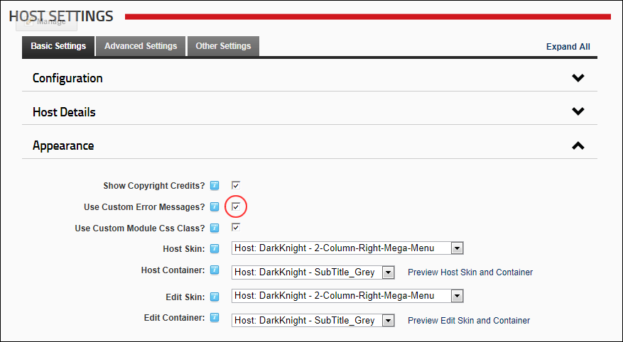

- Mark
 the check box to enable custom error messages.
the check box to enable custom error messages. - Unmark
 the check box to disable custom error messages.
the check box to disable custom error messages.
How to enable or disable the use of custom error messages for this DNN installation. The custom errors in DNN make a more pleasant experience for the users of the site when an error occurs, instead of seeing a scary error message DNN serves up a nicely formatted message that the user can acknowledge but still know how to keep working with DNN.
